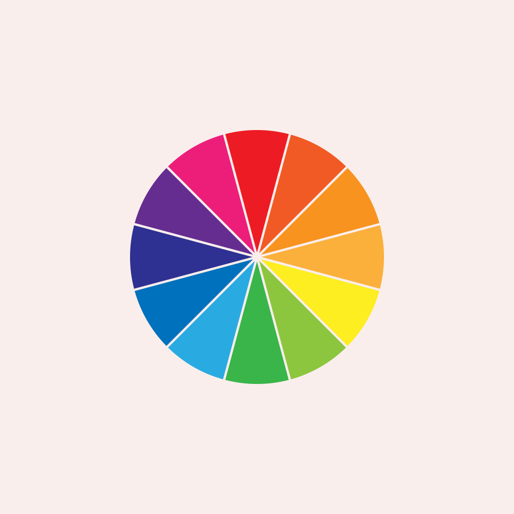

Vermelho
significa: Paixão e Energia
significa: Paixão e Energia
significa: Tranquilidade,Serenidade e harmonia
significa: Luz, Calor Descontração, Otimismo e Algria
significa: esperança, saúde, liberdade, vitalidade e renovação
significa: simboliza espiritualidade, sabedoria, magia e realeza
significa: simboliza principalmente a paz, a pureza, a limpeza e a inocência
significa: significa formada pela ausência
significa: fruto cítrico da laranjeira
significa: simbolizando o amor verdadeiro, o romantismo, a ternura, a doçura e a inocência
